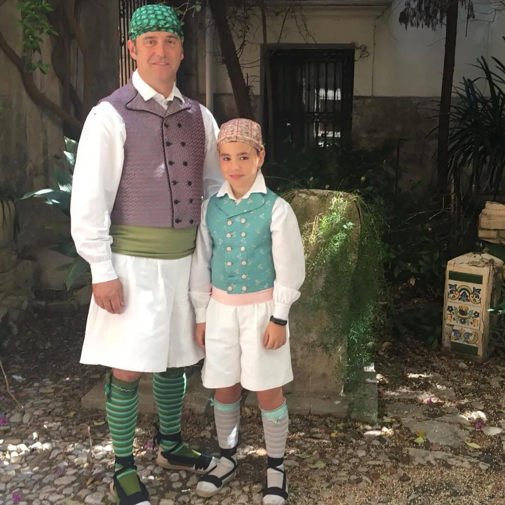

Tienda Centro
C/ Burriana, 21
46005 Valencia
✦ Indumentaria masculina
De saragüells o de torrentí, para hombre y para niño. Lo cortamos y lo cosemos a medida en nuestro taller de Valencia, y también hacemos conjuntos de padre e hijo.
✦ Las piezas
Pañuelo o sombrero en la cabeza, camisa blanca, chaleco, faja, saragüells o calzón, calcetas y alpargatas atadas con cintas. A veces se añade la manta.
El Reglamento Fallero pide al fallero el traje del IV Congreso General Fallero o cualquier otro traje tradicional valenciano. La faja no puede faltar: es una tira de algodón, lana o seda de 30 a 50 cm de ancho y unos dos metros de largo, que se enrolla a la cintura y sujeta el calzón.
El chaleco va ajustado al cuerpo y es la pieza que más se ve. En nuestra colección los hay de brocado, de flores y de cuadros.

✦ Saragüells o torrentí
Calzones muy anchos de lino o de algodón, con pliegues, ceñidos a la cintura con una cinta y largos hasta encima de la rodilla. Los llevaban los labradores de la huerta y del litoral valenciano. En invierno se podía poner encima otro más corto, negro y de lana.
Es el traje más formal. El calzón es corto, va pegado a la pierna y lleva botones a los lados. Encima, el jupetí: una pieza ceñida, sin mangas y abrochada de arriba abajo. Se puede llevar con alpargatas o con zapato.
Va por encima de las orejas, sin taparlas, y sin puntas colgando por detrás. Lo más tradicional es anudarlo atrás y rematar las puntas con un nudo pequeño delante. También se lleva debajo del sombrero.
Los saragüells vienen de lejos: son una pieza de origen morisco, y la palabra ya aparece, como sarawil, en textos andalusíes del siglo X.
Fuente: Wikipedia y Viquipèdia, «Saragüells»
✦ Del labrador al fallero
Hasta los años veinte no había un traje de fallero. Los hombres iban a la falla con la ropa de cada día y, a los actos oficiales, con chaqueta y corbata. Los saragüells y el torrentí solo salían en ocasiones contadas, como las cabalgatas.
En 1954 la Junta Central Fallera creó un uniforme negro, el «traje de labrador de gala», al que se acabó llamando «de cucaracha»: chaqueta corta de raso negro, camisa blanca, faja del color del cargo, sombrero de red con borlas, pantalón largo y alpargatas. Se hizo oficial en el Congreso Fallero de 1958, y en 1964 otro congreso lo exigió para la Ofrenda.
Hacia 1970 algunas comisiones, como Arrancapins y King Kong, quisieron volver a los trajes tradicionales y la Junta Central las sancionó. Aun así, el traje negro se fue dejando y volvieron los de saragüells y de torrentí.
Fuente: Distrito Fallas, «Historia del traje de fallera (y de fallero)»
✦ De nuestro taller
Conjuntos de nuestra colección de indumentaria masculina, todos a medida. Toca una foto para verla en grande.
✦ Preguntas frecuentes
Los dos están bien. Los saragüells son anchos, normalmente blancos, y más de huerta; el torrentí, con el calzón ajustado y botones a los lados, es más formal. Lo que importa es que vayan a juego con el resto del traje.
El del IV Congreso General Fallero o cualquier otro traje tradicional valenciano. En la Ofrenda, las normas de la JCF obligan a desfilar con indumentaria tradicional y sancionan ir con ropa de calle o con blusón.
Depende del cargo. Según el Reglamento: amarillo, presidente de la JCF; gris, secretario general y vicepresidentes; verde, vocales de la JCF; rojo, presidente de falla; azul, directivos; morado, vocales de falla.
Calcetas y alpargatas atadas a la pierna con cintas. Con el torrentí también se puede llevar zapato.
Sí, a medida, igual que el de adulto. También hacemos conjuntos de padre e hijo.
Depende de la tela y de las piezas que entren. Te hacemos el presupuesto sin compromiso.
✦ También hacemos
✦ Ven a vernos
Te atendemos en cualquiera de nuestras dos tiendas, con cita previa.
C/ Burriana, 21
46005 Valencia
C/ Vicent Gallart, 49
46011 Valencia
Escríbenos y te damos cita.
Consulta el horario de cada tienda en la web principal.
Ver horario →